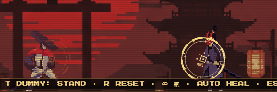
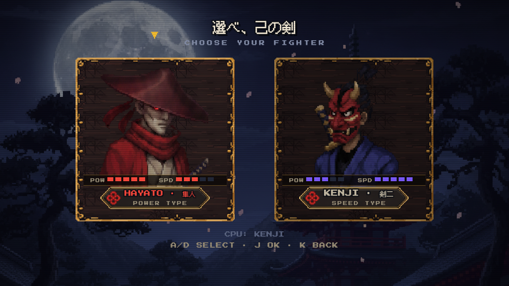
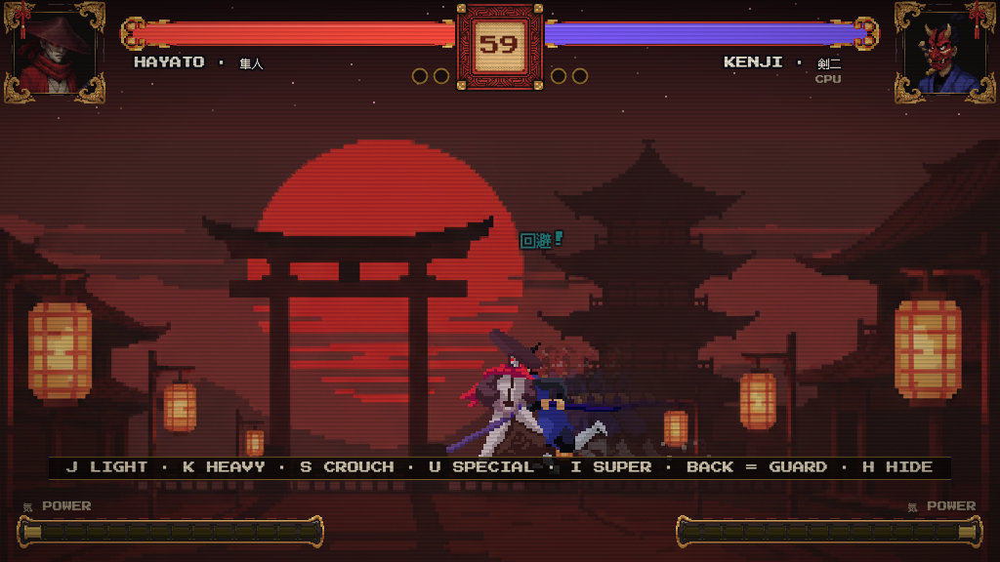
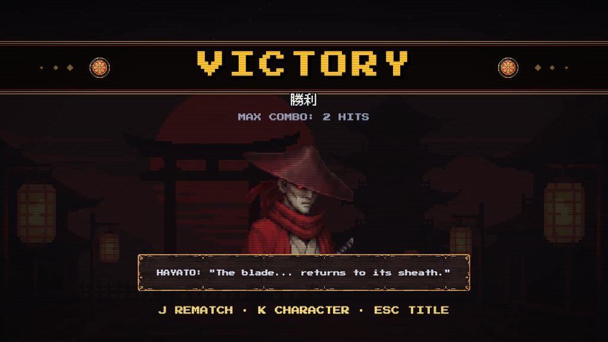
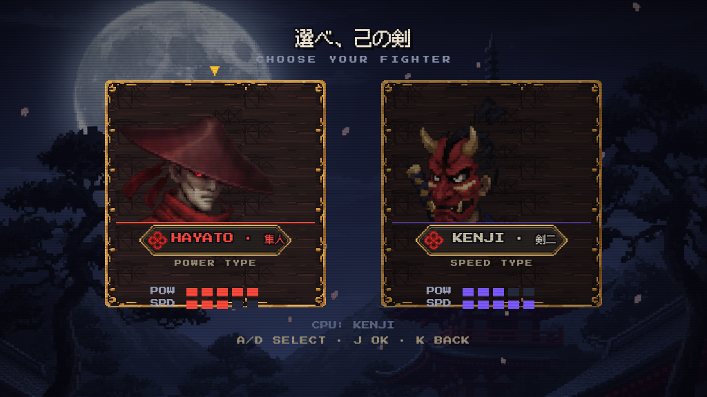
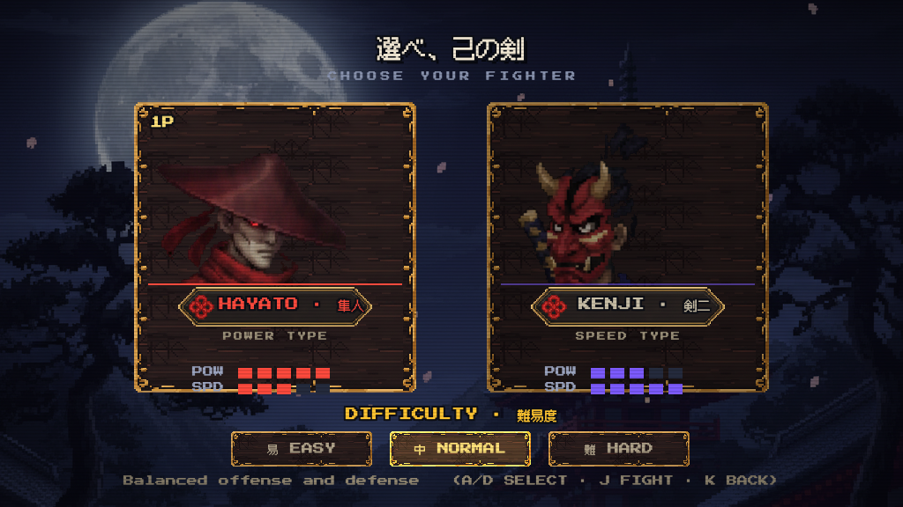
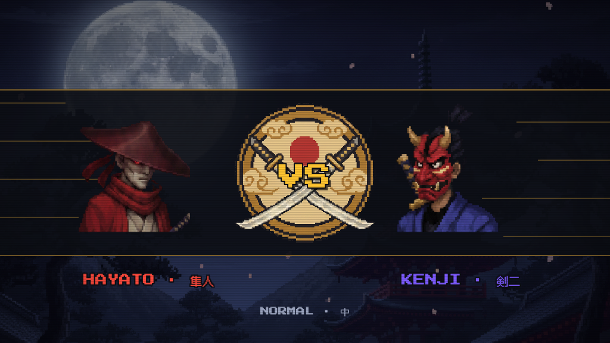
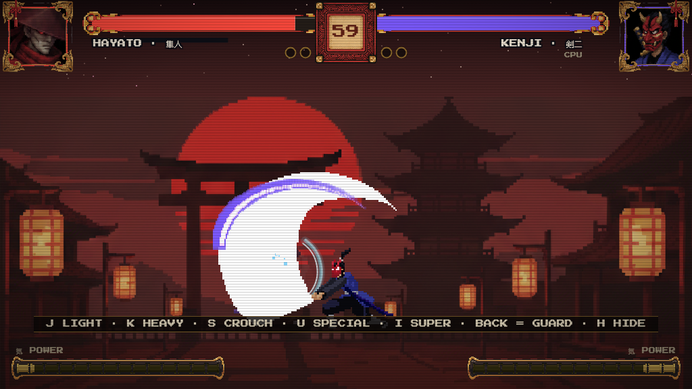

http://localhost:8788/（cmux 内嵌浏览器跑不动 canvas 游戏，会卡；之前那个演示标签页还是锁输入的调试模式，别在那里玩）。开一局按住后方向 = 持防，被打中瞬间 = 爆发。| 屏 | 接入内容 |
|---|---|
| 选人屏 | ✅ 立绘按你的坐标（隼人 188,89,w300 / 剣二 609,111,w262），艺术图越框「破格」式构图；文字重排：POW/SPD 收进框内漆条、名字+TYPE 居中于名牌净区，互不碰撞 |
| HUD 头像框 | ✅ 按你调的切片框（帽檐/鬼角完整、留白一致） |
| 结算屏 | ✅ 隼人按你的坐标（392,199,w266）；剣二按同眼线同脸心推得（409,212,w232）；勝利/MAX COMBO 上移避开帽顶 |



| # | 问题 | 处理 |
|---|---|---|
| 1 | 选人屏文字互相重叠 | ✅ 名字移出名牌结绳装饰区居中、TYPE 移到名牌下方、数值条下移——互不重叠（等你编辑器坐标后以你的为准） |
| 2 | 难度选择折扇装饰 | ✅ 已删除 |
| 3 | VS 徽章后的斜黄线 | ✅ 已删除（速度线保留） |
| 4 | 计时器居中 / 血条对称 | ✅ 逐像素实测核验：印章朱漆中心 511.5（中线 512）、血条外缘 122↔123、内缘 499↔500 —— 数值与实测均对称，无需改动。如你看到的不对称请截图圈出，我再查 |
| 5 | 胜负圆圈开局即满 | ✅ Bug 修复：未胜场 = 空心环，胜场才盖家纹章 |
| 6 | 连击数字位置 | ✅ 移到画面中上部（y=185，攻方一侧 x=240/784），更贴近角色视线 |
| 7 | 「回避」是日语吗 | ✅ 是。回避（かいひ）= 闪避，日语正字，保留 |



